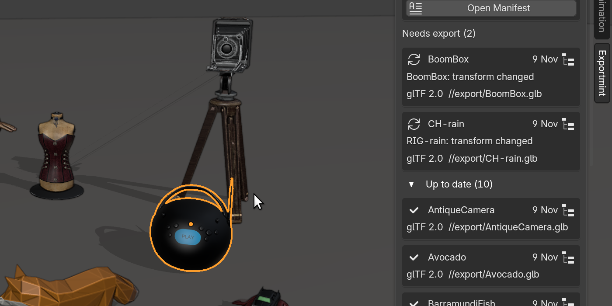
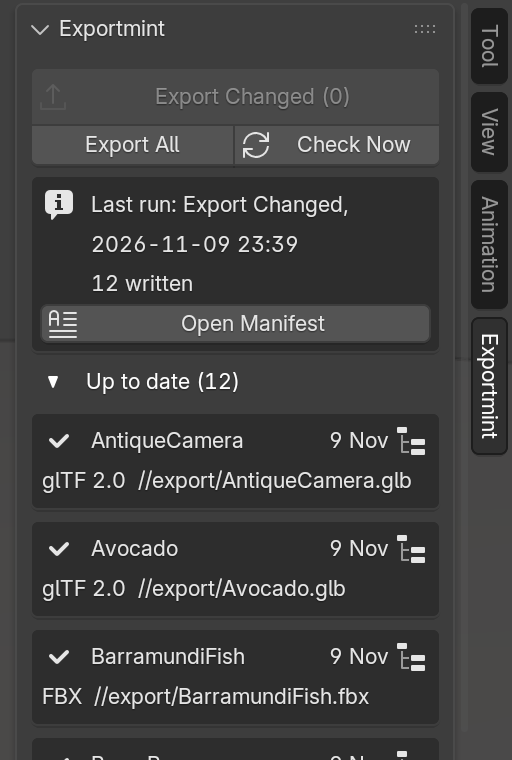
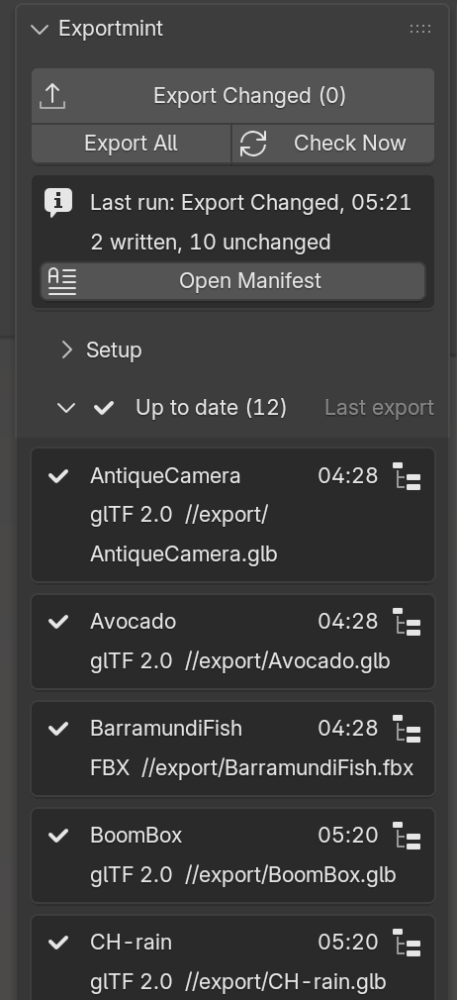

Exportmint for Blender
Re-export only the collections that changed. Every other file keeps its bytes and its date, and every run leaves a manifest of what was written.
$12 once: every update, GPL source included.
Buy for $12Studio, up to 10 artists: $48
Blender 4.2 LTS and later; tested on 4.2.23 and 5.2.3 LTS on Linux (Windows: tests pass under Wine; not yet tested on a Windows PC or a Mac). Polar checkout · 14-day refund · no license check, no account · build machines need no seat (details)

What it does
- Shows which exports are stale, and why. The Exportmint tab in the 3D Viewport sidebar lists every Collection Exporter in every scene of the file. What needs exporting comes first, each row with its reason ("BoomBox: transform changed", "export settings changed", or what failed, in words: "cannot write Cart.glb: a folder has that name"); blocked rows say why they cannot run; up-to-date rows fold away.
- Writes only those. Export Changed runs Blender's own exporter for the changed, never-exported and failed collections, in every scene, and leaves every other file with its bytes and its date. That matters most with FBX: Blender writes new bytes on every FBX export, so after Export All Collections, untouched FBX files show as modified in git (below) and re-import in your engine.
- Keeps a manifest of every run: what was written, what was left alone, what failed and why, with each file's size and SHA-256, in JSON for scripts and plain text for people. A history per .blend keeps every earlier run.
- Runs from the command line across many .blend files, with an exit code for build scripts, never modifying the .blend files.
- Changes nothing you'd lose: remove Exportmint and Blender's own exporters and File > Export All Collections work as before.
Nothing edited, two ways to export, in a git repository of 12 props (real output, as text):
$ blender -b demo_kit.blend --python-expr 'import bpy; bpy.ops.wm.collection_export_all()' > /dev/null $ git status --short M export/BarramundiFish.fbx M export/SheenChair.fbx M export/ToyCar.fbx $ git checkout -- export $ blender -b --command exportmint demo_kit.blend | grep 'Exportmint total' Exportmint total: 0 written, 12 unchanged, 0 failed, 0 blocked; exit code 0 $ git status --short $ git status | tail -1 nothing to commit, working tree clean
Export All Collections leaves three untouched FBX files modified in git; Export Changed (here from the command line, the same run as the button) writes nothing. With the .gitignore lines from the manual. No git? The list still catches exports gone stale in another scene, and the manifest is your receipt of every delivery.
In Blender
The tab at Blender's default sidebar width, before and after the run in the video (swipe).




The manifest that run wrote, exportmint-manifest.txt (real file, as text; the JSON twin holds the same):
Exportmint manifest
Blend file: /home/artist/market-kit/rain_market.blend
Blender version: 5.2.3 LTS
Run: Export Changed
Started: 2026-11-10T02:42:34+0000
Finished: 2026-11-10T02:42:45+0000
Result: 2 written, 10 unchanged, 0 failed, 0 blocked
Written (2)
- BoomBox (scene Market, glTF 2.0)
File: /home/artist/market-kit/export/BoomBox.glb
Result: written
Reason: BoomBox: transform changed
Size: 10557912 bytes
SHA-256: a81d06221cee2195571d4812e22354b5287f5234a9ee9f5a8d99dbac4a89f253
Export time: 2026-11-10T02:42:35+0000
- CH-rain (scene Market, glTF 2.0)
File: /home/artist/market-kit/export/CH-rain.glb
Result: written
Reason: RIG-rain: transform changed
Size: 72951260 bytes
SHA-256: 11764d9c44263c6b5594e56b3edc1626d9236b92cd0b6dd661270bd8433b0191
Export time: 2026-11-10T02:42:36+0000
Unchanged (10)
[10 entries in the same form: AntiqueCamera, Avocado, BarramundiFish, Corset, Fox, Lantern, SheenChair, SheenWoodLeatherSofa, ToyCar, WaterBottle, each "Result: unchanged", "Reason: up to date"]
The same check from a terminal, over two .blend files: Rain's file (already up to date after the run above) and a props file where one prop was moved (real output, as text):
$ blender -b --command exportmint rain_market.blend props/demo_kit.blend 2>/dev/null | grep -E '^(Exportmint| [0-9a-z])'; echo "exit code: ${PIPESTATUS[0]}"
Exportmint Export Changed: /home/artist/market-kit/rain_market.blend
0 written, 12 unchanged, 0 failed, 0 blocked
manifest: /home/artist/market-kit/exportmint-manifest.json
Exportmint Export Changed: /home/artist/market-kit/props/demo_kit.blend
1 written, 11 unchanged, 0 failed, 0 blocked
written: WaterBottle (glTF 2.0) /home/artist/market-kit/props/export/WaterBottle.glb: WaterBottle: transform changed
manifest: /home/artist/market-kit/props/exportmint-manifest.json
export record: /home/artist/market-kit/props/demo_kit.exportmint-record.json (the .blend file is not modified)
Exportmint total: 1 written, 23 unchanged, 0 failed, 0 blocked; exit code 0
exit code: 0
Both .blend files had the same SHA-256 before and after the run. Add --strict to make blocked exporters fail the build too.
Character: Rain Rig (CC) Blender Foundation | studio.blender.org, used under CC BY 4.0; we added a Collection Exporter to her collection. Props from the Khronos glTF Sample Assets: ten CC0 models, and the Sheen Wood Leather Sofa by Eric Chadwick / Darmstadt Graphics Group (CC BY 4.0). Rain and the props are not included with Exportmint.
Teams and build machines
- Seats. $12 is one artist on all of their own computers; the studio licence ($48, same zip) covers up to 10 artists in one team. Build machines need no seat.
- Build machines:
blender --command extension install-file -r user_default -e exportmint-1.1.4.zip, thenblender --background --command exportmint FILE.blend ...(exit code 0 or 1;--strictfails on blocked exporters; details). On an artist's computer, quit Blender once (or Save Preferences) after installing before using the command line. - Git: with the .gitignore lines from the manual,
git statuslists only the exported files that changed.
Details
- Buying: checkout by Polar, which delivers the zip with the full source. If it doesn't work as described on your file and we can't fix it, email us within 14 days for a full refund (terms).
- Every future version of Exportmint is included: no subscription, no renewal, no paid version 2.
- Requires Blender 4.2 LTS or newer. Tested on 4.2.23 LTS and 5.2.3 LTS, on Linux; versions 4.3 to 5.1 were not tested. Windows: see How we tested (Wine); not yet tested on a Windows PC. macOS has not been tested yet.
- Formats: the Add Exporters menu offers glTF 2.0, FBX and USD, and these are the formats tested. Exporters of other formats you add in Blender's own panel (Alembic, OBJ, PLY, STL) are listed and run the same way, but are not part of the tests.
- GPL-3.0-or-later. Full source code included with your purchase.
- Privacy: Exportmint makes no network calls and collects nothing: no telemetry, no analytics, no update checks, no account. It writes only your exported files, the manifests and their history folder, and its own record: a hidden text block inside the .blend and
<blend name>.exportmint-record.jsonnext to it. - Support: support@ochrestack.com. Your Blender version and the manifest of the run help most.
Documentation
The full manual (README.md) is inside the zip: open the zip to read it, but install the zip itself, as it is. A one-page guide is online: Exportmint quick start.
Install
- Download
exportmint-1.1.4.zip. Do not unzip it. - In Blender 4.2 or newer, open Edit > Preferences > Get Extensions.
- Open the drop-down menu (⌄) at the top right, choose Install from Disk... and pick the zip.
- In the 3D Viewport, press N and open the Exportmint tab.
If Get Extensions asks about internet access, Continue Offline is fine; a red "Repository Alert" after that is Blender's own offline message. Build machines: see Teams and build machines.
Words used on this page
- Collection Exporter: since Blender 4.2, a collection can store an export format, a file path and export settings (Properties > Collection > Exporters). File > Export All Collections runs them all.
- Manifest: the record of one run, listing every exporter with what happened to its file.
- SHA-256: a fingerprint of a file's content. Two files with the same SHA-256 have the same bytes.
- Exit code: the number a command returns to the script that ran it; 0 means success.
Known limits
- Exportmint never alters what an exporter writes: no axis or scale fixes, no triangulation, no texture conversion, no LODs.
- It does not save time on every kit: on a large glTF kit, Export Changed took about twice as long as Export All (table below). With FBX it was faster.
- Not checked: world settings, render visibility, driver expressions (only their current result counts), and anything else outside the list under How we tested. Changes inside linked .blend libraries are seen only through their result in your file.
- Computed values (world transforms, the mesh after modifiers) are compared within a tolerance (0.0025 units at 5,000 units from the origin); a sub-millimetre change only in a modifier's result on a very dense mesh may not show.
- Objects are checked at the scene's current frame. Changing the frame of an animated scene marks its animated objects as moved, and the row says which frame was exported.
- Only each exporter's main file is tracked: extra files (glTF Separate's .bin and textures) are not listed or hashed, and switching an exporter's format leaves the old file in place.
- If you also export with Blender's own buttons, FBX rows read "output file changed on disk" and are written once more on the next Export Changed.
- The list updates by itself only while the Exportmint tab is on screen, and an object changed by a script in another scene shows only after Check Now; Export Changed always checks everything first and can be clicked at (0).
- The command line needs a writable folder next to each .blend, for its record file. The manifest history folder is never pruned.
- No automatic export on save or on a timer, no importing, no animation baking. English only.
How we tested
- 155 automated tests, all passing on Blender 4.2.23 LTS and 5.2.3 LTS, run headless on every change: one for each kind of edit below, the manifest checked against the files on disk, the command line on several .blend files with its exit codes, and the scenarios of a separate review that tried to make Exportmint call a stale export up to date.
What counts as changed (each has its own test)
objects added to or removed from the collection, its child collections or the collections it instances; an object's position, rotation or scale; the mesh after modifiers and geometry nodes (vertices, faces, UV maps); vertex groups and weights, shape keys, bones, light and camera settings; object, mesh, material and image names; a material slot or a value in a material's node tree; a keyframe; a texture file's content; custom properties, when the exporter writes them; the exporter's settings or file path; the scene's frame range, frame rate or units; an output file that is missing or that something else rewrote. Saving, reopening, a fresh checkout, selecting and hiding things in the viewport do not count.- The real interface, clicked through on Blender 4.2 and 5.2 under a virtual display: 10 of 10 interface checks pass on each, including a real click on Export Changed that wrote 2 files and left 10 unchanged. A second session on a three-scene kit of 13 exporters (an empty collection, two exporters on one file, a long name four folders deep, a rig, an object moved by a script in another scene, a failed run) passes 13 of 13 checks at 1920x1080 on both versions and at 1366x768, at Blender's default sidebar width. The session on this page passed its own 15 checks, including that the 10 files left alone kept their SHA-256 and modification time.
- Windows build under Wine (Blender 4.2.23): 153 passed, 2 skipped (POSIX Ctrl+C, symlinks). It found three Windows path problems, fixed in 1.1.4. Wine is not a Windows PC.
- In git, with the manual's .gitignore lines,
git statusafter Export Changed lists only the files it wrote, and nothing after a run that wrote nothing (two of the tests above, in a real repository). - On a heavy file (40 collections, 3.6 million vertices), the list updated 0.05 to 0.08 s after each one-object edit; a full check takes 3.3 to 3.7 s.
Time, measured both ways. Exportmint saves rewrites, not time: the change check reads every mesh.
| Kit | Blender | File > Export All Collections | Export Changed, two edits |
|---|---|---|---|
| 12 real props (demo kit) | 4.2.23 | 0.68 to 0.69 s | 0.42 to 0.43 s |
| 12 real props (demo kit) | 5.2.3 | 0.86 to 0.87 s | 0.58 to 0.65 s |
| 40 collections, 3.6M vertices, glTF | 4.2.23 / 5.2.3 | 1.47 s / 1.41 s | 2.72 s / 3.27 s |
| 40 collections, 3.6M vertices, FBX | 4.2.23 / 5.2.3 | 7.28 s / 6.35 s | 2.99 s / 3.02 s |
How these images were made
Every image, the video and the Select in Outliner loop on this page come from one recording session: Blender 5.2.3 LTS on Linux, with Exportmint 1.1.4 installed from its zip through Blender's extension installer (an earlier build of 1.1.4; the zip on sale adds a later manual and fixes that only change behaviour on Windows or when an exporter leaves its old file untouched, so the panel shown is the same), at 2560x1174 with the interface scaled 1.75 times and the sidebar at Blender's default width. The character is Rain, Blender Studio's free production rig (CC BY 4.0, credit above), in her own file as downloaded from studio.blender.org; her character collection, CH-rain, got a glTF 2.0 Collection Exporter. Around her are eleven props from the Khronos glTF Sample Assets, one collection and one exporter each: 12 exporters, exported once before the session. Every pointer move, click and key is real input sent to Blender: Rain is clicked, her rig selected and turned 25 degrees with R Z; the BoomBox is clicked and moved 0.45 m with G X; Export Changed and Select in Outliner are real clicks. Each frame was captured once Blender had drawn it, 60 frames a second, because a software-rendered viewport cannot be filmed smoothly in real time; the pointer is the X server's own cursor, captured with each frame, and the 10.7 s while the two files were written is cut. In the video, the sidebar is shown enlarged in the middle of the frame (cut from the same frame, over the dimmed shot) whenever a caption is about it. After every step the session compared Exportmint's own state with what the screen shows: 15 checks, all passed. The stills are single frames of that session, cropped; nothing is drawn on them. The manifest above is the file that run wrote, as text, with its ten Unchanged entries summarised in one line. The two terminal blocks are the real output of the commands shown, run in a shell on the same machine and pasted as text: the git example on the 12-prop demo kit from How we tested, in a repository with the manual's .gitignore lines (plus one line keeping the downloaded source models out of it), and the command line on Rain's file after the session and on a copy of that kit with its WaterBottle moved and saved.